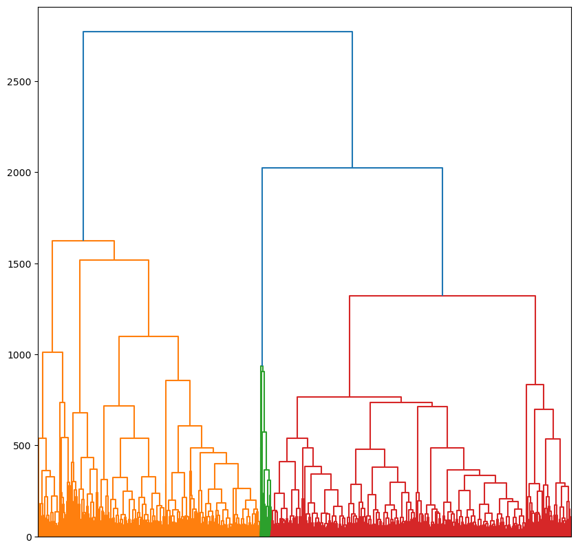

Understanding Urban Form
Hierarchical Morphotope Classification
Charles University
Urban Morphometrics
A study of urban form through the means of quantitative assessment of its constituent elements.
HiMoC Aims
- Results align with theory and qualitative work
- Detailed elements as fundamental units - buildings, streets and their configurations
- Scale - applicable to numerous countries
Study area - Central Europe*
Germany, Czechia, Austria, Slovakia, Poland, Lithuania
Enclosed Tessellation Cells
Measured characteristics


Two levels of aggregations
- Regional ETCs to morphotopes
- Morphotopes to a taxonomy of Morphotopes.
Regions
Region around Prague
Region around Krakow
Morphotope
“the smallest urban locality obtaining distinctive character among their neighbours from their particular combination of constituent morphological elements.”

Taxonomy of morphotopes
Results
Limitations
Even cadastral data is of very different quality, there is no consistent definition of what is a building across neighbouring countries, regions or even cities within the same country.
The morphometric characters are limited to 2d variables, since there is only aggregte height data available that is derived and not recorded.
Adding a temporal dimension to the analysis is difficult due to data unavailability.
Conclusions
Multiple types of urban form in different countries and across the setttlement hierarchy are morphologically close to eachother.

Nevertheless the heterogeneity of urban form is present even at high levels of aggregation.
Linear development concentration
The taxonomy extends existing regional and global classifications.
The importance of elements and variables changes as we move through the taxonomy. Capturing and combining aspects of other urban form classifications.
Corine

Urban Atlas
Local climate zones
Open Source Software
- Main repository: https://github.com/uscuni/urban_taxonomy
- Slides: https://uscuni.org/talks/202504_taxonomy_gisruk.html
- Upstream packages : libpysal, neatnet, momepy, geoplanar, shapely, geopandas, spopt